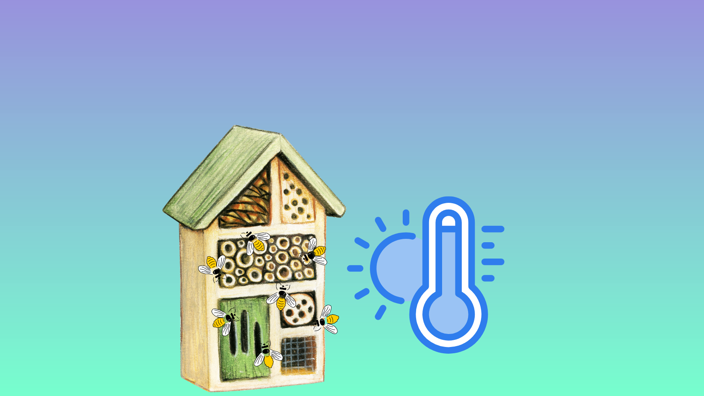

<ion-header>
  <ion-toolbar style="text-align: center;">
    <h2>Hotel de insectos</h2>
  </ion-toolbar>
</ion-header>

<ion-content>
  <ion-card>
    
    <ion-button [routerLink]="['/movimiento']" class="botonl" expand="block" color="tertiary" style="margin-top: 10px
    ;">Movimiento</ion-button>
    <ion-card-content style="font-family:Verdana, Geneva, Tahoma, sans-serif; color: white;">
     <h2> Entre para ver si hay movimiento cerca del hotel.</h2>
    </ion-card-content></ion-card>
    <ion-card>
    
    <ion-button [routerLink]="['/temperatura']" class="botonl" expand="block" color="tertiary" style="margin-top: 10px
    ;">Temperatura</ion-button>
    <ion-card-content style="font-family:Verdana, Geneva, Tahoma, sans-serif; color: white;">
    <h2>  Entre para ver si la temperatura y humedad esta estable en la habitación. </h2>
    </ion-card-content>
  </ion-card>
</ion-content>

